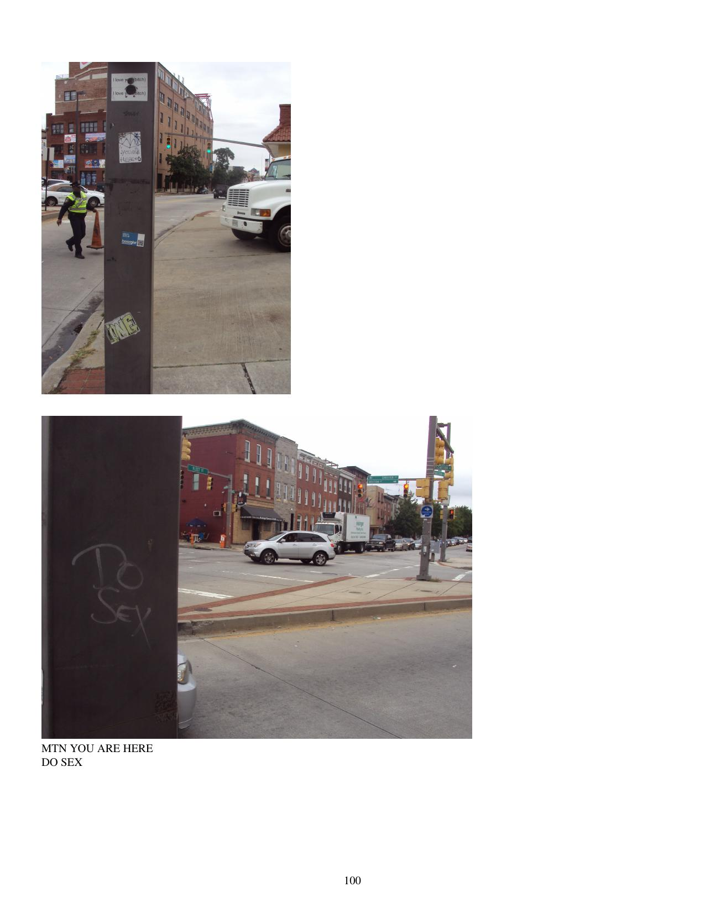

Now who's that babe with the fabulous shadow?
It's only one scene, but to me it don't matter
Her movies get down like you won't find in my hometown (oh no)
They won't believe it when they see what they're seein' (oh no)
Go see baby, now
Pictures on the silver screen
Greatest thing you've ever seen
Now her name is up in lights
-Van Halen
Pole menus. Pleasant View Gardens. Scenes from around Orleans Street. Douglass Homes. Boxers. Pepsi is watching you. Pole fashion chaos. Scenes from around Fells Point. Bail prom. Painted bar signs. Beer barrels. Dirty movies.
Includes:
Random sample page:
